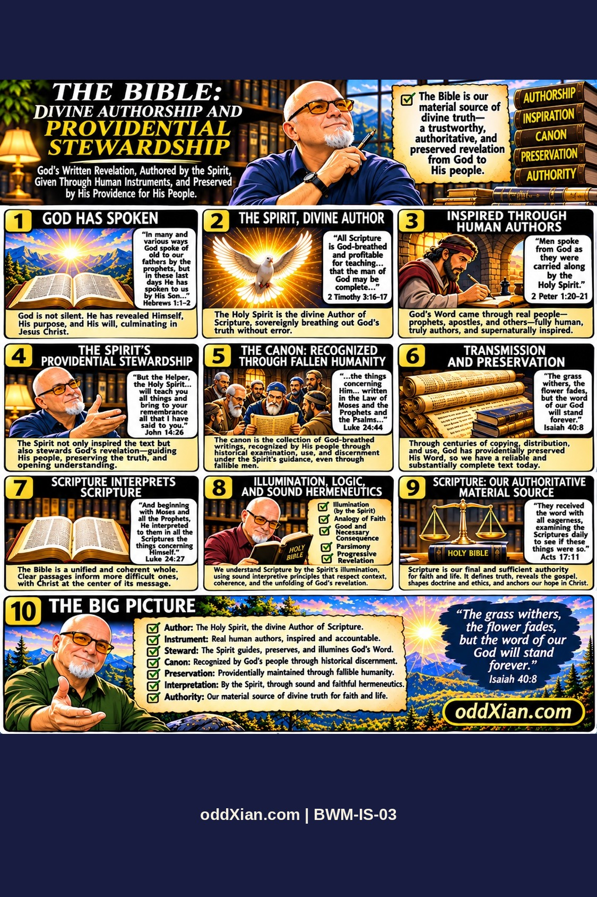

BWM-IS-03 · The Bible: Divine Authorship and Providential Stewardship

The plate, panel by panel
Companion narrative
**Status:** Working narrative draft; not yet externally sourced or approved. **Author:** J. D. Longmire. **Publication pointer:** https://oddxian.com. **Graphic:** pending ingestion. **Panel script:** [PANEL-SCRIPT.md](PANEL-SCRIPT.md).
Thesis and scope
The Bible is the authoritative material source for Christian systematic theology. Its authority derives from God's self-disclosure, and the Holy Spirit's inspiration of human authors. God's providence sustains the availability of Scripture through the historically observable work of fallible copyists, translators, teachers and communities. The distinction between the authority of the original divine revelation and the reliability of particular human judgments must remain explicit.
Biblical grounding
Hebrews 1:1–2 establishes divine revelation through the prophets and climactically in the Son. Second Timothy 3:16–17 identifies Scripture as God-breathed and useful for teaching, correction and training. Second Peter 1:20–21 describes prophetic speech from God as men were carried along by the Holy Spirit. Acts 1:16 and Hebrews 3:7 attribute scriptural speech to the Spirit. John 17:17 identifies God's word as truth. Isaiah 40:8 and 1 Peter 1:24–25 teach the endurance of God's word. These references must be examined in context before quotation or stronger preservation claims.
Inspiration, preservation and canon
**Inspiration:** Explicit New Testament attribution of scriptural and prophetic speech to God and the Spirit. Human writers remain real historical agents.
**Providential preservation:** The proposition that the Spirit governs the survival and availability of Scripture through fallible human activity is a theological inference from divine sovereignty and the enduring word. It does not establish the perfection of every manuscript copy, translation, edition or ecclesiastical decision.
**Canon recognition:** Luke 24:44 witnesses an established scriptural grouping; 2 Peter 3:15–16 bears on the status of Paul's letters. Neither passage by itself supplies a complete historical demonstration of the boundaries of the later Christian canon. Jewish and Christian canonical traditions, disputed books and patristic evidence require separate primary-source investigation.
**Textual transmission:** Surviving manuscript witnesses include textual variants. Their existence must be acknowledged, classified and assessed by ordinary textual-critical methods. Doctrinal claims about providential stewardship must engage this evidence, rather than evade it.
Interpretation and the material source
The analogy of faith coordinates interpretation with Scripture's broader teaching. Good and necessary consequence permits warranted theological deduction; parsimony disciplines unnecessary assumptions; progressive revelation tracks the unfolding of God's disclosure. These are interpretive commitments, not new inspired sources. General revelation (Psalm 19; Romans 1:19–20) remains genuine; Scripture governs normative doctrinal formulation within this systematic.
The Spirit's illuminating work must be articulated without collapsing the original apostolic promises of John 14:26 and 16:13 into a blanket guarantee of infallibility for subsequent interpreters. Human interpretive disagreement remains a serious datum.
Historical research required before candidate status
- Original manuscript witnesses and reputable critical editions, including variants material to contested passages.
- Primary evidence of canon lists, disputed writings and reception, with exact text and date verification.
- Historical Reformed confessional formulations of Scripture and canon, distinguishing them from the biblical text itself.
- Explicit engagement with Catholic, Orthodox and Protestant canonical differences and alternative accounts of ecclesial authority.
- Relevant internal JD theological corpus, verified by path and immutable commit, rather than inferred from memory.
Claim register
| Claim | Classification | Current support | Confidence / remaining work |
| Scripture is God-breathed | Direct biblical teaching | 2 Tim 3:16–17 | HIGH for textual attribution; exegesis pending |
| Spirit speaks through human writers | Direct biblical teaching | 2 Pet 1:20–21; Acts 1:16 | HIGH for textual attribution; exegesis pending |
| Spirit providentially preserves canon through fallen people | Theological synthesis | Isa 40:8; doctrine of providence | UNCERTAIN regarding specific historical mechanisms |
| The church recognizes rather than creates divine authority | Confessional/theological formulation | Primary confessional and historical sourcing pending | UNCERTAIN pending historical review |
| All later canon judgments were infallible | Not asserted | None | Rejected as an inference from inspiration alone |
Panel map
See [PANEL-SCRIPT.md](PANEL-SCRIPT.md) for ten-panel mapping. Detailed external source locators and internal corpus references are pending verification.
Editorial disposition
Draft only. No approved image, publication permalink, independent Muse review or JD acceptance recorded.